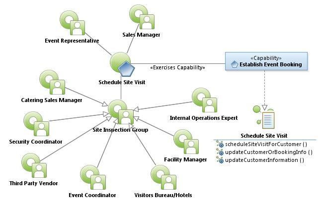
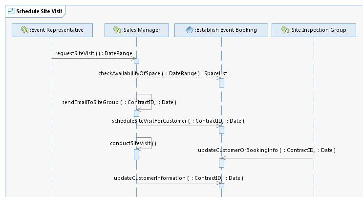

|
Schedule Site Visit Use Case Specification
Select to enlarge...

Schedule Site Visit Use Case Model
|
Scope: The Sales Manager uses the system to check the
schedule to determine if there are conflict (appropriate time to show
space, availability of staff.) The Sales Manager determines who should
attend the site visit (catering , IT, event coordinators, security,
etc.) and invite them to attend and then sends an email to all
appropriate site staff to ensure the building is active (lights on,
water fountains on, etc.). [Note: Some vendors do not want others to be
able to see the convention center while they are renting (private
meetings, secret info presented, etc.)]
Select to enlarge...

Schedule Site Visit Sequence Diagram
|
Table of Interface Descriptions
| Type/Interface | Description |
|---|
Sales Manager/
requestSiteVisit |
The Event Representative contacts the Sales Manager and requests a site visit. |
Establish Event Booking/
checkAvailabilityOfSpace |
Once the customer meeting requirements are received, the Sales
Manager uses the system to pull up an Event Diary which displays a grid
indicating who is in what room, when, group status (current system
color codes - contracted groups are displayed in one color, definite
groups are in another - the system allows for the displayed colors to
be configured), and what's currently available. The grid allows the
Sales Manager to drill down to see other options offered to other
potential groups. When a customer negotiates for business, they may
provide several dates and space option(s) and each option is specified
in the Event Diary. The Sales Manager uses the system to change the
reserve space options and the system indicates different offerings and
available space. The Grid also allows the Sales Manager to schedule
site visits during times in which there is little or no event activity,
as deemed appropriate by the Sales Manager. |
Sales Manager/
sendEmailToSiteGroup |
The Sales Manager uses an Outlook Address Book group to send all
the members of the Site Inspection Group an Email indicating the date a
site visit will occur, indicating specifics desired by the Event
Representative. |
FS073
Establish Event Booking/
scheduleSiteVisitForCustomer |
The Sales Manager uses the system to annotate a site visit has been
scheduled on a specific Customer Account. If the site visit is in
relationship to a specific booking, the site visit is added/logged to
the specific booking (Contract ID). If the site visit is occurring in
the future, then an activity (trace) is scheduled to remind staff of
the site visit. |
Sales Manager/
conductSiteVisit |
The Sales Manager and the Site Inspection Group meet with the Event
Representative to tour the facility, during which the Event
Representative may provide additional booking information. |
FS074
Establish Event Booking/
updateCustomerOrBookingInfo |
A member of the Site Inspection Group goes to the Customer Account
or a specific Booking (Contract ID) and provides additional information
related to the event or the customer. The system automatically sends
email notifying the Sales Manager and/or the Sales Director for the
booking/Customer, as well as automatically logging the activity. This
notification is configurable by activity. The inspection Group cannot
make changes to the booking information, or space planning. Only Sales
Managers and Directors can affect these kinds of critical changes. |
FS075
Establish Event Booking/
updateCustomerInformation |
The Sales Manager takes all the information garnered from the site
visit with the Event Representative and adds them to the Customer
Account and/or the Specific Booking comments (Contract ID). The booking
is updated with any salient information (estimated attendance records,
space needed, profile, competitors, comments, etc.). |
|
{kind=link}
{kind=link}